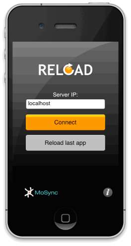
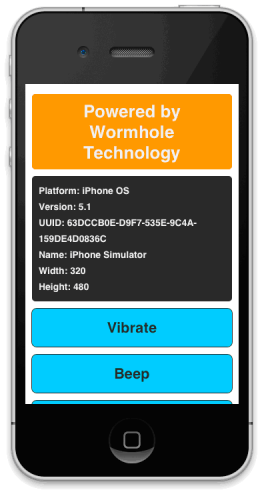
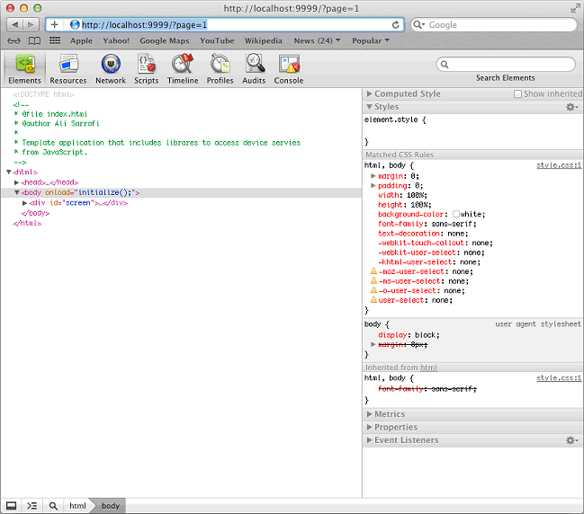
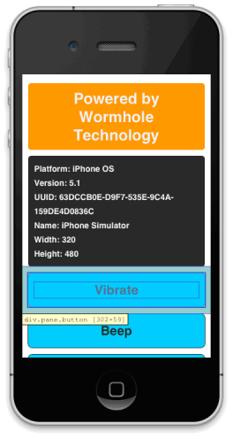

If you are running MoSync Reload on OS X, you can take advantage of the integration between the iOS simulator and the Safari browser to help debug your JavaScript code from within MoSync Reload. Here we show you how.
To use this debugging feature you will need an Apple Mac OS X machine with the iOS SDK installed on it.
You will also need MoSync Reload Beta 4 or later.
Note that this feature is not implemented on the MoSync Reload Client available from the Apple App Store. You must build and install the Reload Client that comes with the latest Reload download. Please note the client included in the package is only compatible with iOS 5 and above.
Follow the guide for Using MoSync Reload to get started.
1. Open the iOS Client in the downloaded package in xCode and run it on the iOS simulator, the running app should look like this:

2. Run the MoSync Reload Server and connect the simulator client to it.
3. Reload an app to your client. If you have not yet created an app, just create a new project using our basic Web-based template:

4. Now open a Safari Window and enter the following address in the address bar:
http://localhost:9999/?page=1
5. The browser will open the Web Inspector view with access to your HTML5 code running on the simulator. Your browser window should look something like this:

The debugger is a full featured debugger that uses the built-in webkit functionality on the device. Therefore you can change the DOM in real time (for Web UI only), change the CSS, and use breakpoints in JavaScript.
For example if you click on a part of the HTML code in the debugger that element will be highlighted on the simulator screen and you can inspect the result of your code:

Note: To be able to load the debugger for each new reloaded app you need to refresh the page in your Safari Window.